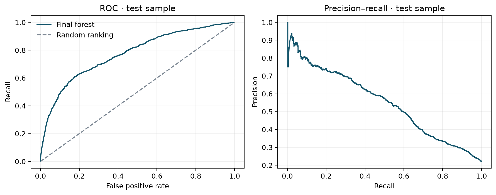
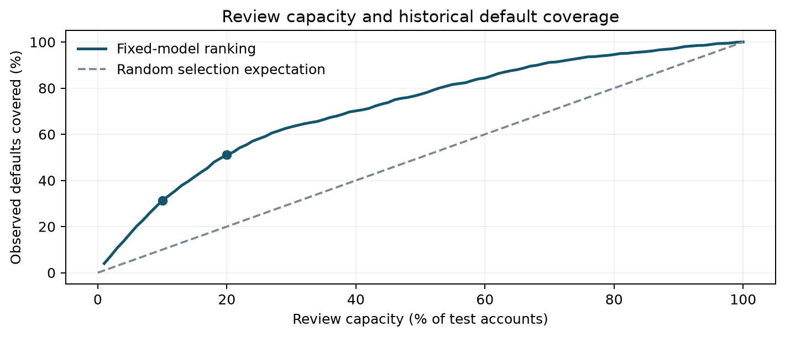
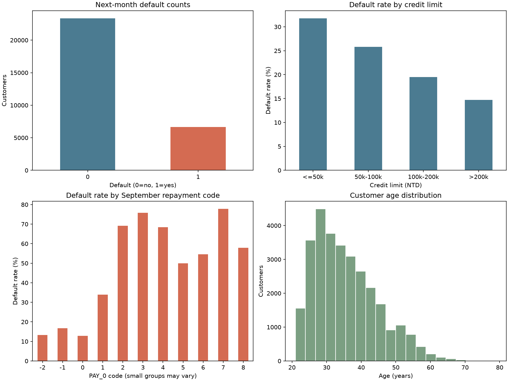

信用风险决策与排审优化实验室
基于台湾 30,000 笔真实信用卡历史样本，将机器学习违约概率预测（AUC 0.774）直接链接至信贷业务中的“有限人工排审工位”与“非对称成本优化”。
样本总量
30,000
基准违约率 22.12%
测试集 ROC-AUC
0.7741
6,000 条隔离测试集
概率校准 Brier Score
0.1358
均方概率误差，越小越准
Top 10% 排审拦截率
31.27%
415 笔违约 · 3.13x 基准提升
实时客户信用风险测算模拟器
调整下方申请人财务与还款指标，观察前端数学引擎实时测算出的违约概率（PD）、风险评级及预期损失（EL）。
-1: 按时还款; 0: 正常循环; 1~5: 逾期月数 (核心强信号)
13.2%
预估下月违约概率 (PD)
低风险客户 (Low)
测算预期损失 (EL)
NT$ 8,910
排审建议建议
常规放行
有限工位下的审核容量决策 (Review Capacity)
在银行真实信贷运营中，调查员每天能复核的件数是受限的。拖动滑块查看分配不同比例工位时的拦截效率。
捕获实际违约数
415 笔
测试集总计 1,327 笔违约
违约总覆盖率 (Recall)
31.3%
占全量真实违约比重
审核精准度 (Precision)
69.2%
被查账户中真实违约占比
较随机抽查效率提升
3.13x
随机仅能抓取 132.7 笔
核心模型图表与实证检验
测试集严谨评测结果与探索性数据分析可视化。

模型区分度与 PR 曲线
测试集 ROC-AUC 达到 0.7741，在 22.12% 不平衡基准下展现极高正类区分能力。

排审容量累积收益曲线
展示模型排序队列与随机排审的收益对比，Top 20% 工位即可捕获超半数 (51.09%) 违约。

探索性数据分析分布
揭示 9 月还款延期状态 (PAY_0) 与额度分组对违约率的决定性影响。